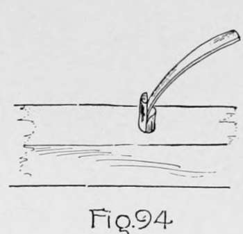

Furniture Making - Closed Mortise-And-Tenon Construction. Continued
Description
This section is from the book "Beginning Woodwork At Home And In School", by Clinton Sheldon Van Deusen. Also available from Amazon: Beginning Woodwork At Home And In School.
Furniture Making - Closed Mortise-And-Tenon Construction. Continued
(h) Plane the two longer rails to length (34), width (35) and thickness (10) and the two shorter rails to length (36), width (35) and thickness (10).
(i) Clamp the two longer rails in the vise as in Fig. 77, and measure from each end the length (7) of the tenons. At the points thus determined, draw knife lines square across the joint sides. Remove the pieces from the vise, and continue the knife lines square around the pieces. In a similar manner draw knife lines square around the two shorter rails as far from each end as the length (7) of the tenons.
(j) Set the gage to the distance (15) that the inner surface of the tenon is to be from the inner surface of the rail, and with the gage-block against the working face of each of the four rails, gage lines for the inner surfaces of the tenons. Change the set of the gage to the distance (7) the outer surface of the tenon is to be from the inner surface of the rail, and gage for the outer surface of the tenons. Now set the gage to the width (32) of the tenon, and with the gage-block against the joint side, gage lines for the width of the tenon on the working faces and surfaces opposite, also across the ends. This completes the laying out of the eight tenons.
(k) To remove the surplus wood outside of the tenons, clamp each rail in the vise in a vertical position and saw with the back-saw so that the inner edges of the saw teeth cut exactly to each gage line. Next holding the piece on the bench-hook, saw to the knife lines. Make all of the three saw cuts to the gage lines of each tenon before sawing to the knife lines. If the sawing has been well done no chiseling will" be necessary, except a little to clean out the angles where the saw cuts meet. Fit each tenon in a mortise without too great force and mark it. Clamp each end and each side together, as in Fig. 91, changing the position of the back blocks to suit each case and testing with the try-square to ascertain if the legs are square with the rails; also see that the shoulders on the rails fit tight against the legs.
(1) Remove the tenons from the mortises and lay out and cut a chamfer on each tenon, the lines for its edges being 3/8" both ways from the inner edge of the tenon. Plane the two pieces for supporting the seat to 12x1¼"x¾" and screw them with three 1½" No. 10 screws to the inside of the two longer rails, as shown at E, Fig. 92, with the upper side of the support 13/16" below the top of the rail. In a similar manner plane the other two pieces to 9¼"x1¼"x¾" and screw them with two screws to the inside of the shorter rails.
(m) Apply a thin coat of liquid glue to the tenons and the shoulders around the tenons on one of the end rails, also on the surfaces within the mortises that will be in contact with the surfaces of these tenons. Then put one end of the stool together and clamp it as in Fig. 91. Glue up the other end of the stool in a similar manner. They should be left in the clamps ten or twelve hours, but it is well after they have been in the clamps about three hours to clean off any glue that has squeezed out around the joint or into the other mortises in the legs.
(n) Make sure that the stool will clamp together, as in Fig. 92, all joints closing up well. Then apply a thin coat of liquid glue to all of the remaining tenons and mortises, and clamp the stool together as in Fig. 92. Test to see that the two pairs of diagonally opposite legs are the same distance apart, and if they are not, try to force the two legs that are farthest apart nearer together. They may be held in this position by a stay placed diagonally across the stool and nailed to the sides of the main pieces of the clamps.
(o) After ten or twelve hours the clamps may be removed. All of the surfaces should then be scraped with a cabinet scraper. This is a rectangular piece of steel about 1/16 thick. Holding the scraper as in Fig. 93, draw it toward you, applying a downward pressure as it is drawn forward. It will be possible by this method to remove the slight irregularities in the surface that are nearly always found in oak after planing and which if left in the surface are especially noticable after the finish is applied. After scraping all surfaces they should be rubbed thoroughly with No. 1 sandpaper, using a block as in Fig. 64.
(p) Plane two pieces of oak for the seat frame to 13⅝"x1½"x⅞" and the other two to 9⅞"x 1½"x⅞".
(q) Clamp the two longer pieces in the vise as in Fig. 77, and draw two knife lines across the joint sides for the ends of each mortise, one ½" and the other 1½" from the ends of the pieces. Next clamp the two shorter pieces in the vise as in Fig. 77 and draw knife lines across the joint side 1" from each end. Remove these pieces from the vise and continue these lines square around each piece. Set the gage to ⅛" and with the gage-block against the working face, gage between the lines for the ends of the mortises on the longer pieces ; and from the line around each end of the shorter pieces, gage lines to and across the ends of the pieces. Now change the set of the gage to ⅝" and gage again as above with gage-block against the working face. Next set the gage to 1", and with the gage-block against the joint side of the shorter pieces, gage from the knife lines to and across the ends.
(r) The mortises may now be cut as in e except that there will be more difficulty in cleaning out the bottom of the mortises. It is advisable to clean them out before cutting to the knife lines at the ends of the mortise. The wood may be cut away from the outside of the tenons as explained in k The tenons may then be fitted in the mortises and marked, remembering that the working faces of all the pieces are to be on the same side of the frame. Clamp the entire frame together with the clamps used for the stool. Then test the frame with the winding-sticks, and if there is a wind in it, a little thoughtful work on some of the tightest joints may take the wind out. Now apply glue to the tenons and in the mortises, and clamp the frame together.
(s) When the glue is dry and the frame out of the clamps, any wind remaining in it should be planed out. Then set the gage to the same distance as the thickness of the frame in its thinest part, and gage around the frame with the gage-block against the true surface; then plane the frame down to the gage line. The stool should now be placed up-side down on the seat frame, and when as centrally placed as possible, make marks with a knife on the frame even with the inside surfaces of all four legs. It is also well to make a mark on the frame and on the inside of a rail, so that the frame may be placed in this same position later. Right-angled notches should be laid out even with these marks and sawed out. All four sides should now be planed off so as to leave a 1/16 space for the cane between the outside of the frame and the inside of the rails. Next bore two 3/8" holes 3/4" deep and 11/16" between centers in the under surface of the frame near the middle of the length of each end piece and one near the middle of the length of each side piece, all six of the holes being 7/16" from the outer edge of the frame. Now lay out and plane a 1/8" chamfer on the upper and lower edges entirely around the outside of the frame, and with a chisel make a similar chamfer on the upper and lower edges on the inside of the frame. By a method similar to that used in planing the roller of the towel roller, change these chamfered edges on both the inside and the outside of the frame into rounded edges. The frame should now be scraped and sandpapered.
(t) Now make four round pegs about 1 1/2 long, using the dowel plate as in Chapter II, o. Clamp each one in a vertical position in the vise, and with the back-saw, make a cut at least ¾" deep down through the center of the peg. Then measure and saw off a length of ¾" from the end just sawed. This makes two parts of each peg, and when the end of one part is rounded, they are used, as in Fig. 94, to fasten the ends of the cane.
(u) Before starting to put on the cane the fumine should be put in a dish and five times as much water as fumine added. It should then be applied with the brush to all parts of the stool and the seat frame. What remains should be kept to apply to the weaving. The fumine will be dry enough in ten or fifteen minutes to begin putting on the cane.
(v) The cane should be soaked in water at least two hours before using, and it is well to plan the spacing of the cane and mark on the frame where each strand is to be, in order that the outer cane may come close against the legs and that there may be a space of about 1/16" between adjacent strands. Apply a little glue to one of the pegs and drive it in one of the holes in a side of the frame (Fig. 94) with an end of a cane between the parts of the peg in such a position that the smoother side of the cane will be on the outside of the seat. The cane should now be passed around the frame lengthwise (Fig. 95), drawing it snug but not too tight, and tying together the ends of successive pieces of the cane so that the knots will be on the under side of the frame. When the other side of the frame is reached, the end of the cane should be fastened as when starting.
(w) A piece of cane to run crosswise may now be fastened in one of the holes in the end of the frame, sliding two of the lengthwise strands apart to get at one of the holes. With a knife reduce the width of the cane near the other end, (see Fig. 96) and by folding the wide part at the end, thread it in the weaving needle. Now pass the needle under every fourth strand on the bottom of the seat, and on the top weave over one and under two; each succeeding time around, begin to weave one strand before the corresponding one the last time (Fig. 96). The final end should be fastened as the others, with a peg in one of the holes.
(x) The fumine as mixed in u should now be applied to the weaving, using care that all parts of the cane exposed are covered. The stool should now be fumed with ammonia and rubbed with the mixture of boiled oil and hard oil finish, as explained in Chapter VIII, z.

Continue to:
- prev: Chapter IX. Furniture Making - Closed Mortise-And-Tenon Construction
- Table of Contents
- next: Chapter X. Application Of Principles